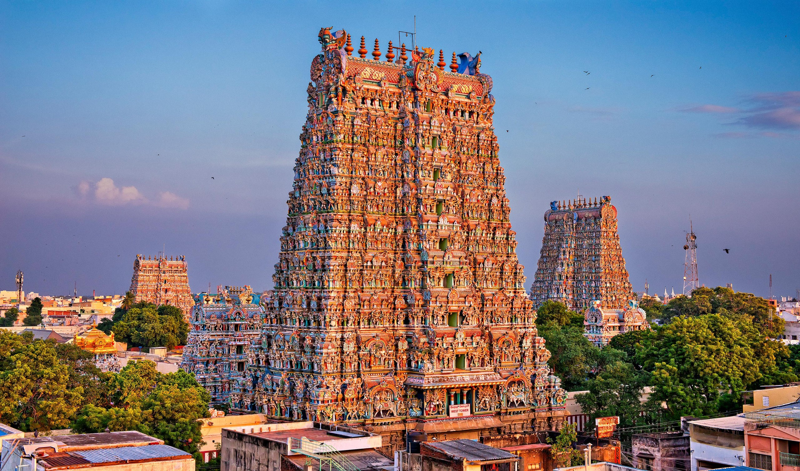
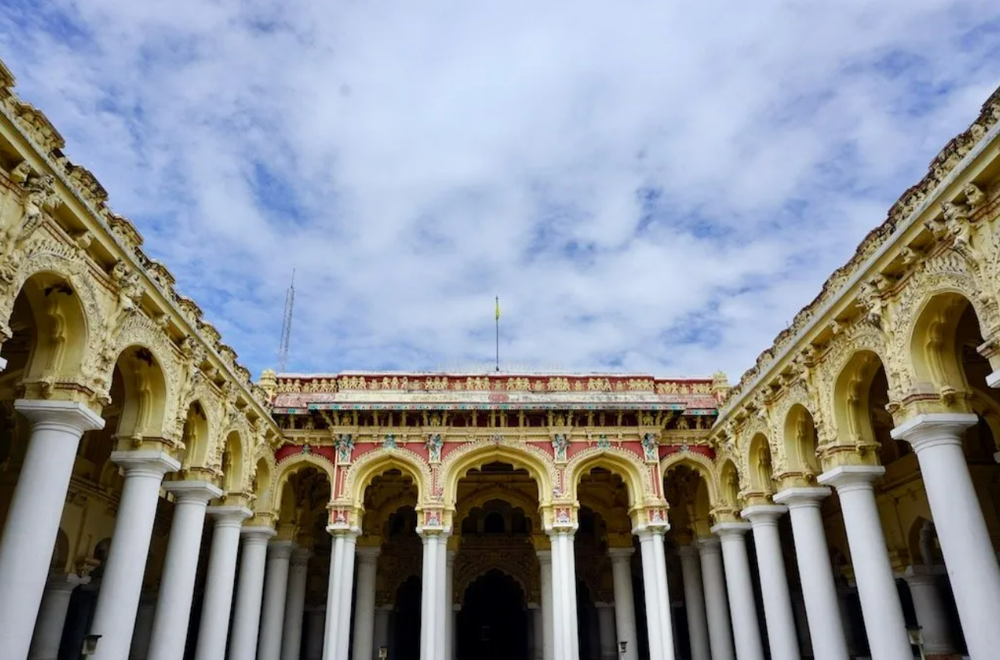
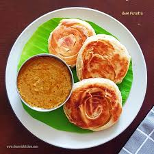
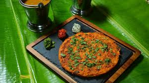
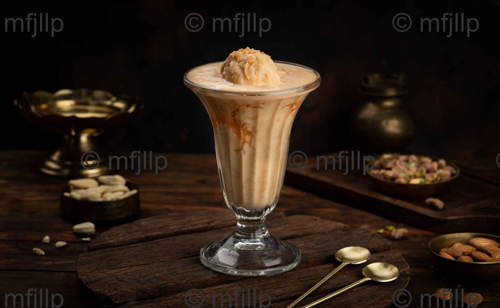

The Temple City of Tamil Nadu

One of the most famous temples in India, known for its stunning architecture and religious significance.

A magnificent palace showcasing the architectural brilliance of the Nayak dynasty.
Houses exhibits related to Mahatma Gandhi and India's freedom struggle.
Explore the famous street food and traditional cuisine of Madurai.
Visit local markets for traditional handicrafts and textiles.
Capture the beautiful architecture and cultural heritage.

A variation of poratta, that is made in the shape of a bun and is known for its fluffy and soft texture. .

Chopped mutton meat cooked with Indian spices layered on a dosa, topped with an omelette. .

A popular cold drink from Madurai made with milk, almond gum, nannari syrup, sugar, and ice cream.